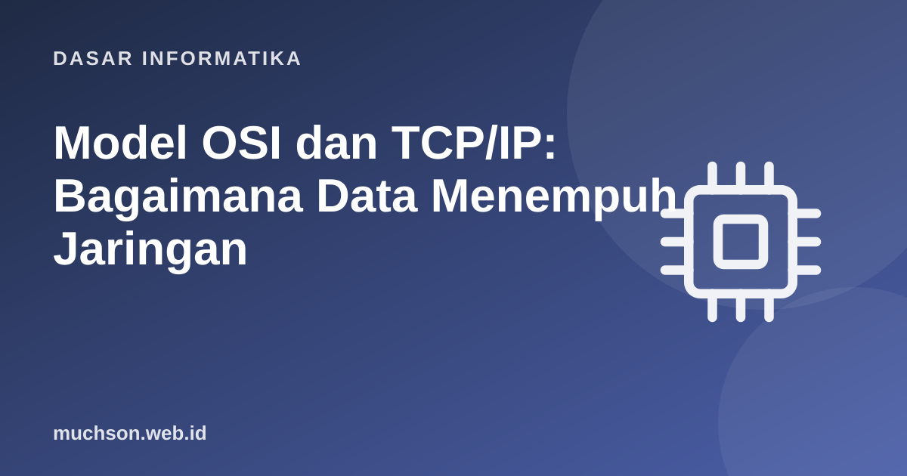

Beranda › Artikel › Dasar Informatika
Dasar InformatikaModel OSI dan TCP/IP: Bagaimana Data Menempuh Jaringan
Mengirim sebuah pesan melintasi planet melibatkan kabel, gelombang radio, ratusan perangkat perantara, dan miliaran perangkat berbeda. Semuanya bisa bekerja karena jaringan dirancang berlapis: tiap lapis memikirkan satu masalah dan menyerahkan sisanya kepada lapis lain lewat antarmuka sederhana.
Sebaiknya sudah paham: sistem bilangan

Setelah membaca dan mencoba materi ini, Anda mampu:
- menjelaskan gagasan arsitektur berlapis dan manfaatnya
- menyebut tujuh lapis OSI dan empat lapis TCP/IP serta padanannya
- menjelaskan enkapsulasi dan dekapsulasi
- membedakan TCP dan UDP dan kapan memakainya
- mengaitkan perangkat (hub, switch, router) dengan lapisnya
Mengapa berlapis
Bayangkan mengirim surat: Anda menulis isi surat, memasukkannya ke amplop beralamat, lalu kantor pos memilah, mengangkut, dan mengantarkannya. Anda tidak perlu tahu rute pesawat. Jaringan bekerja serupa: aplikasi tidak perlu tahu apakah data berjalan lewat kabel tembaga atau serat optik.
Dua model
| Lapis OSI | Nama | Tugas | Contoh | Lapis TCP/IP |
|---|---|---|---|---|
| 7 | Aplikasi | Layanan untuk pengguna | HTTP, DNS, SMTP | Aplikasi |
| 6 | Presentasi | Format dan enkripsi data | TLS, JSON, JPEG | Aplikasi |
| 5 | Sesi | Mengelola dialog | Sesi dan soket | Aplikasi |
| 4 | Transport | Pengiriman antar proses; keandalan | TCP, UDP | Transport |
| 3 | Jaringan | Pengalamatan dan pemilihan rute | IP, ICMP | Internet |
| 2 | Data link | Pengiriman antar perangkat bertetangga | Ethernet, Wi-Fi, alamat MAC | Akses jaringan (link) |
| 1 | Fisik | Sinyal pada media | Kabel, radio, serat optik | Akses jaringan (link) |
OSI adalah model referensi untuk belajar dan berkomunikasi; Internet sebenarnya berjalan di atas tumpukan TCP/IP yang lebih ringkas. Ungkapan seperti "lapis 7" atau "lapis 3" tetap dipakai sehari-hari: load balancer lapis 7 memahami HTTP, router bekerja di lapis 3.
Enkapsulasi
Setiap lapis membungkus data dari lapis di atasnya dengan header sendiri (dan terkadang trailer). Penerima membuka bungkus satu per satu dari bawah ke atas (dekapsulasi).
# Simulasi enkapsulasi: setiap lapis menambahkan headernya
data = "GET /beranda"
segmen = {"port_asal": 51512, "port_tujuan": 80, "nomor_urut": 1, "isi": data}
paket = {"ip_asal": "192.168.1.10", "ip_tujuan": "203.0.113.5", "ttl": 64, "isi": segmen}
frame = {"mac_asal": "AA:BB:CC:00:00:01", "mac_tujuan": "AA:BB:CC:00:00:FE", "isi": paket}
def tampil(x, indent=0):
for k, v in x.items():
if isinstance(v, dict):
print(" " * indent + f"{k}:"); tampil(v, indent + 4)
else:
print(" " * indent + f"{k} = {v}")
tampil(frame)
# router: membuka frame, memeriksa IP tujuan, lalu membungkus ulang dengan MAC baru untuk lompatan berikutnya
frame_baru = {"mac_asal": "AA:BB:CC:00:00:FE", "mac_tujuan": "11:22:33:44:55:66", "isi": frame["isi"]}
paket_baru = dict(frame_baru["isi"]); paket_baru["ttl"] -= 1
print("\nsetelah satu router: TTL =", paket_baru["ttl"], "| alamat IP tetap", paket_baru["ip_tujuan"], "| MAC berubah menjadi", frame_baru["mac_tujuan"])mac_asal = AA:BB:CC:00:00:01
mac_tujuan = AA:BB:CC:00:00:FE
isi:
ip_asal = 192.168.1.10
ip_tujuan = 203.0.113.5
ttl = 64
isi:
port_asal = 51512
port_tujuan = 80
nomor_urut = 1
isi = GET /beranda
setelah satu router: TTL = 63 | alamat IP tetap 203.0.113.5 | MAC berubah menjadi 11:22:33:44:55:66
TCP dan UDP
import socket, threading
# server TCP kecil di komputer ini (127.0.0.1), lalu klien terhubung dan bertukar data
server = socket.socket(socket.AF_INET, socket.SOCK_STREAM)
server.bind(("127.0.0.1", 0)); server.listen(1)
port = server.getsockname()[1]
def layani():
koneksi, _ = server.accept() # menerima jabat tangan tiga langkah (dikerjakan OS)
data = koneksi.recv(1024)
koneksi.sendall(b"ECHO: " + data)
koneksi.close()
threading.Thread(target=layani, daemon=True).start()
klien = socket.create_connection(("127.0.0.1", port))
klien.sendall(b"halo TCP")
print(klien.recv(1024).decode())
klien.close(); server.close()
# UDP: tanpa koneksi, langsung kirim datagram
u_server = socket.socket(socket.AF_INET, socket.SOCK_DGRAM); u_server.bind(("127.0.0.1", 0))
u_klien = socket.socket(socket.AF_INET, socket.SOCK_DGRAM)
u_klien.sendto(b"halo UDP", u_server.getsockname())
data, alamat = u_server.recvfrom(1024)
print("UDP diterima:", data.decode())ECHO: halo TCP
UDP diterima: halo UDP
Perangkat dan lapisnya
| Perangkat | Lapis | Fungsi |
|---|---|---|
| Hub | 1 | Mengulang sinyal ke semua port (kini jarang dipakai) |
| Switch | 2 | Meneruskan frame hanya ke port yang tepat berdasarkan alamat MAC |
| Router | 3 | Meneruskan paket antar jaringan berdasarkan alamat IP |
| Firewall | 3–7 | Menyaring lalu lintas menurut aturan (alamat, port, bahkan isi aplikasi) |
| Load balancer | 4 atau 7 | Membagi permintaan ke beberapa server |
| Access point | 1–2 | Menghubungkan perangkat nirkabel ke jaringan kabel |
1. Mengapa panggilan video lebih sering memakai UDP daripada TCP?
2. Pada lapis apa kabel yang putus menjadi masalah?
3. Apa fungsi nomor port?
4. Mengapa pembagian lapisan memudahkan inovasi?
- Arsitektur berlapis memecah masalah jaringan menjadi bagian yang dapat diganti.
- OSI 7 lapis sebagai referensi; TCP/IP 4 lapis sebagai praktik.
- Enkapsulasi menambah header di tiap lapis; router mengubah MAC dan TTL per lompatan.
- TCP andal dan berurutan; UDP ringan dan cepat.
- Switch lapis 2, router lapis 3.
Tanya jawab
Apa itu alamat MAC?
Apa bedanya HTTP dan HTTPS?
Apa itu NAT?
Referensi
- James Kurose dan Keith Ross, Computer Networking: A Top-Down Approach (Pearson)
- Andrew Tanenbaum dan David Wetherall, Computer Networks (Pearson)
- MDN Web Docs: HTTP
- RFC Editor: dokumen standar Internet